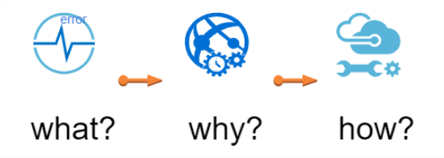
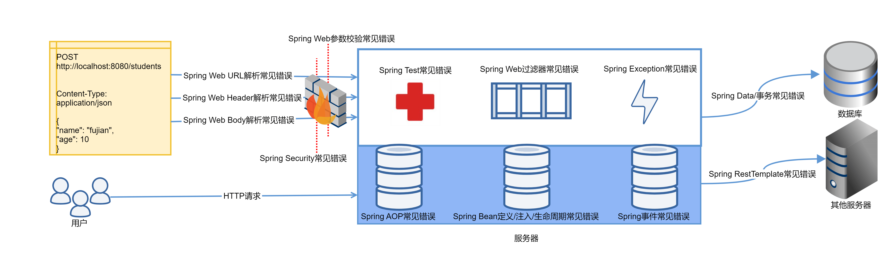

- 00 导读 5分钟轻松了解Spring基础知识.md.html
- 00 开篇词 贴心“保姆”Spring罢工了怎么办？.md.html
- 01 Spring Bean 定义常见错误.md.html
- 02 Spring Bean 依赖注入常见错误（上）.md.html
- 03 Spring Bean 依赖注入常见错误（下）.md.html
- 04 Spring Bean 生命周期常见错误.md.html
- 05 Spring AOP 常见错误（上）.md.html
- 06 Spring AOP 常见错误（下）.md.html
- 07 Spring事件常见错误.md.html
- 08 答疑现场：Spring Core 篇思考题合集.md.html
- 09 Spring Web URL 解析常见错误.md.html
- 10 Spring Web Header 解析常见错误.md.html
- 11 Spring Web Body 转化常见错误.md.html
- 12 Spring Web 参数验证常见错误.md.html
- 13 Spring Web 过滤器使用常见错误（上）.md.html
- 14 Spring Web 过滤器使用常见错误（下）.md.html
- 15 Spring Security 常见错误.md.html
- 16 Spring Exception 常见错误.md.html
- 17 答疑现场：Spring Web 篇思考题合集.md.html
- 18 Spring Data 常见错误.md.html
- 19 Spring 事务常见错误（上）.md.html
- 20 Spring 事务常见错误（下）.md.html
- 21 Spring Rest Template 常见错误.md.html
- 22 Spring Test 常见错误.md.html
- 23 答疑现场：Spring 补充篇思考题合集.md.html
- 导读 5分钟轻松了解一个HTTP请求的处理过程.md.html
- 知识回顾 系统梳理Spring编程错误根源.md.html
- 结束语 问题总比解决办法多.md.html
- 捐赠
00 开篇词 贴心“保姆”Spring罢工了怎么办？
你好，我是傅健，很开心能在这里遇见你。
先做个自我介绍吧！你可能认识我，没错，我之前在极客时间开过一门视频课《Netty源码剖析与实战》。出于对开源的热爱，我本身是一名Netty源码贡献者，同时也是Jedis、Spring Data Redis、influxdb–java、Jenkins等众多开源项目的Contributor，如果我们曾在开源社区相识，也算很有缘分了。
本职工作的话，我是一名软件工程师，在思科中国研发中心工作，从业已经有十多年了，和同事一起合作写过一本书叫《度量驱动开发》。期间，我也做过很多项目，类型很丰富，从移动端应用到文档存储系统，消息系统到电话接入系统等等。实际上，不管这些项目冠以什么名称、历经什么级别流量的洗礼，你都不会质疑一点：我们在项目中大量使用和依赖Spring。
Spring的变革
细数经历，我和团队开始使用Spring可以追溯到10多年前，正是我刚参加工作的时候。那时候我们了解Spring都是从SSH框架开始的。到了今天，Spring已经随着技术的发展悄然换了一副面貌。
在Spring还没有像今天这样被广泛应用时，我们开发一个Java Web程序还属于茹毛饮血的时代，我们会编写一堆看似重复的代码或者配置，然后战战兢兢地期待一次就能运行成功。然而，即使这些工作都是重复的，仍然会有各种各样的错误产生。
到了2014年之后，便捷、强大的Spring Boot的引入，让Spring的应用变得更加广泛起来。它给我们这些Java程序员带来了福音，我第一次见到Spring编写的Hello World Web应用程序时（示例如下），那种惊叹的感觉至今记忆犹新。
@SpringBootApplication
@RestController
public class Application {
public static void main(String[] args) {
SpringApplication.run(Application.class, args);
}
@RequestMapping(path = "/hi")
public String hi(){
return "hi, spring";
};
}
但利好往往就像一把双刃剑。后来有很多人说，Spring降低了程序员的技术门槛，确实，以往那些错综复杂的开发工作已经变得非常简单了。可也有很多人掉进了一个误区，因为简单，所以穿“格子衫”“会码字”就能搞Java开发了吗？唉～现实残酷啊！
Spring踩坑之旅
不管你是新手程序员，还是资深程序员，只要你使用过Spring，应该都有过类似这样的感受。
虽然完成了工作，但是总觉得心里没底。例如，我们在给一个接口类添加@RestController注解时，有时候难免会想，换成@Controller可以么？到底用哪个更好？
当我们遇到一个过滤器（Filter）不按我们想要的顺序执行时，通常都是立马想到去加@Order，但是@Order不见得能搞定所有的情景呀。此时，我们又会抓狂地胡乱操作，各种注解来一遍，最终顺序可能保证了，但是每个过滤器都执行了多次。当然也可能真的搞定了问题，但解决得糊里糊涂。
还有，为什么我们只是稍微动了下，就出故障了呢？例如，新手常遇到的一个错误，在Spring Boot中，将Controller层的类移动到Application的包之外，此时Controller层提供的接口就直接失效了。
而当我们遇到问题时，又该从何查起？例如，下面这段代码在一些项目中是可以运行的，但是换成另外一个项目又不可以了，这是什么情况呢？
@RequestMapping(path = "/hi", method = RequestMethod.GET)
public String hi(@RequestParam String name){
return name;
};
甚至有时候，我们都不是换一个项目，而是添加一些新的功能，都会导致旧的功能出问题。例如，我们对下面这个 Bean 增加 AOP 切面配置来拦截它的 login 方法后：
@Service
public class AdminUserService {
public final User adminUser = new User("fujian");
public User getAdminUser(){
return adminUser;
}
public void login(){
//
}
}
你可能会蒙圈地发现：下面这行本来在别处工作正常的代码，忽然就报空指针错误了，这又是为何？
此时，相信你的内心是迷惘、纠结的，心里可能还会暗骂：去它的Spring，搞啥呢？
String adminUserName = adminUserService.adminUser.getUserName();
为什么会有这些感受呢？追根溯源，还是在于 Spring实在太“贴心”了。它就像一个“保姆”，把我们所有常见的工作都完成了，如果你幸运的话，可能很久都不会遇到问题。
但是，这份贴心毕竟是建立在很多约定俗成的规则之上。就像我们雇佣的保姆，她可能一直假定你是吃中餐的，所以每次你下班回家，中餐就已经做好了。但是假设有一天，你忽然临时兴起想吃西餐，你可能才会发现这个贴心的保姆她只会做中餐，你想不吃都不行。
Spring就是这样，它有很多隐性的约定，而这些约定并不一定是你所熟悉的。所以，当你遇到问题时，很有可能就抓狂了。一方面我们得益于它所带来的轻松，因为不需要了解太多我们也能工作；另一方面也会崩溃于问题来临之时无法快速解决，因为我们平时根本不需要，甚至不觉得要了解更多。
这个时候就有很多人跳出来跟你说：“你一定要提前把Spring吃透啊！”
可当你翻阅Spring源码时，你肯定会望而生畏，真的太多了，不带着问题去学习无异于大海捞针。即使你去通读市场上大多数畅销的Spring教程，你可能仍然会感觉到茫然，不知道自己到底掌握得如何。毕竟读完之后，你不一定能预见到未来可能遇到哪些问题，而这些问题的规避和处理往往才是检验你学习成果的标准。
我如何讲这门课？
厌倦了遇到问题时的疲于奔命，自然就要寻找高效便捷的学习法门了，所以这几年我一直在整理Spring开发中所遇到的各种各样的问题，然后按类划分。
项目忙的时候，就简单记录一下，忙过去了就深入研究。现在我的 ToDoList 已经非常详实了，对我的团队帮助也非常大。对于新人来说，这是份全面的避坑指南；对于老人来说，这又是个很好的问题备忘录。
这就是我做这门课的初衷，这里也真心分享给你。
在内容设计上，整个专栏都是以问题驱动的方式来组织知识点的，大概是这样的一个思路：

- 给出50+错误案例；
- 从源码级别探究问题出现的原因；
- 给出问题的解决方案并总结关键点。
另外，专栏中的大多数问题并没有太大关联，这是为了避免你的学习负担过重，我想尽可能地让你在碎片化时间里去吃透一个问题及其背后原理。最终，通过这些无数的问题点，帮助你形成对Spring的整体认知，做到独当一面。
而在问题的选型上，我一共筛选出了50多个常见问题，这些问题主要来自：我和同事在生产环境中经常遇到问题，Stack Overflow网站上的一些高频问题，以及常用搜索引擎检索到的一些高频问题。
这些问题的选择都遵循这样几个原则：
- 不难，但是常见，基本每个人都会遇到；
- 不太常见，但是一旦碰见，很容易入坑；
- 在某些场景下可以工作，换一种情况就失效。
课程设计
有了关于具体内容的详细说明，我相信你对专栏所能解决的问题已经有了大概的感知。接下来，我再跟你说说整体的课程设计，帮助你进一步了解。
本专栏共分为以下三个部分，你可以对照着下面这张图去理解我的设计思路：

Spring Core篇：Spring Core包括Bean定义、注入、AOP等核心功能，可以说它们是Spring的基石。不管未来你是做Spring Web开发，还是使用Spring Cloud技术栈，你都绕不开这些功能。所以这里我会重点介绍在这些功能使用上的常见问题。
Spring Web篇：大多项目使用Spring还是为了进行Web开发，所以我也梳理了从请求URL解析、Header解析、Body转化到授权等Web开发中绕不开的问题。不难发现，它们正好涵盖了从一个请求到来，到响应回去这一完整流程。
Spring 补充篇：作为补充，这部分我会重点介绍Spring测试、Spring事务、Spring Data相关问题。最后，我还会为你系统总结下Spring使用中发生问题的根本原因。
通过学习这50多个常见、典型的问题，我相信对于Spring的本质，你会有更加深刻的认识；而对于产生问题的原因，也能做到洞若观火。最终掌握这些问题的最佳解决方式，触类旁通。
Tips
不过，有几点我还是要提醒你一下。这门课程需要一定的基础，你要知道最基本的Spring使用知识，比如如何自动注入一个Bean，如何使用AOP等；同时，你也需要有一定的耐心，因为涉及源码理解。
另外，这门课程重在实践与查漏补缺，所以在每个问题的讲解上，我不可能追根溯源地把所有的背景知识、前后调用关系都完整呈现出来，否则你看到的无疑是一门包含大量重复内容的Spring教程而已，这也违背了这门课的初衷。
我希望当你学到某个问题，但感觉基础有所欠缺时，你能及时去补习相关的内容。当然了，你也可以直接在留言区中问我，我会尽我所能为你提供帮助。
还有就是，课程中会有很多的案例和示例代码，还有一些关键实现，我希望你能跟着我的节奏去验证一下，只有真正自己动手了印象才会深刻。
最后，我想说，这个专栏是一个问题库，也是一本工具书，好好利用，当你再次遇到各种各样的Spring问题时，它会给你底气！如果你现在已经遇到了一些难题，也欢迎在留言区中与我交流，对于专栏中未涉及，却十分有价值的问题，我后期会考虑以加餐的形式交付给你。
感谢信任，我们下节课见！
© 2019 - 2023 Liangliang Lee. Powered by gin and hexo-theme-book.